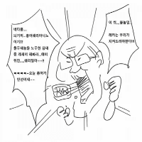

@ㅇㅇ 고소고발 견제로 대통이 못된다면 찢은 대선 후보도 못 됐겠지, 선거 부터 이긴 다음 각자 목적을 이루는 방식으로 여러 세력이 연합해서 정해진 후보를 밀어주는 거임, 선거를 이기는게 목적일 뿐이니 니가 이야기 한 것들은 전혀 문제가 안되고
↳ 답글 · ㅇㅇ · 11.09 13:45:04
흠결이 없다 -> 짜여진 틀에서만 맞춰서 산다 -> 우두머리가 될 수 없음
↳ 답글 · ㅇㅇ · 11.09 13:45:47
@ㅇㅇ(180.182) 한국의 경우 노조 페미 전라도 운동권 친노가 연합 한거임, 우선 자기 목적을 이루기 위해선 정권을 가져와야 하고 그래서 서로 다른 이해 관계를 가진 놈들이 연합해서 문재앙, 이재명 같은 놈들 하나 후보로 세워놓고 그냥 묻지도따지지도 않고 표를 던지는 거야, 그래서 애네 개인에 대한 지지는 그리 강하지 않음, 문재앙도 임기 끝나기가 무섭게 버려졌지 ㅋㅋㅋㅋㅋㅋㅋ
↳ 답글 · 인용구 · 11.09 13:46:16
우빨 좌빨 모두 당에서 제일 정신나간 극단 쓰레기들이 주류를 차지함 + 대선은 각 정당의 경선을 뚫고 올라온 새끼들이 후보되는건데 그 후보를 극단 쓰레기 병신들이 뽑음. = 니가 생각하는 "흠결없는"은 기대조차 못하고 "사람같이 말이라도 하는" 새끼는 경선을 뚫을수 없음.
↳ 답글 · ㅇㅇ · 11.09 14:10:11
대중들은 조용하고 평범한 인간보다 목에 핏대 올리고 이상한 소리 하는 애들을 더 잘 기억함.
좋든 나쁘든 인지도가 있어야 선거에서 유리해짐
부정부패 안하고 이상한짓 안하는 놈은 대선후보 자리까지 가지도 못함. 밑바닥에서 남 뒤치닥거리나 하며 전전하다가 정치인생 끝나는겨
↳ 답글 · ㅇㅇ · 11.09 16:25:51
흠결없는 청렴결백한 사람이 무슨 이득을 위해 노예를 자처해? 철인정치라는게 절대권력이면서 그냥 노예인 ai를 세우는건데 인간은 그게 불가능하잖아 학생회장은 얻는게 있으니까 하려고 하지만 과대표는 귀찮으니까 안하려고 하지 결국 얻는게 있으니까 나오는건데 흠결없는데 욕심이 있다 쉽지않지
↳ 답글 · ㅇㅇ · 11.09 16:52:41
1찍(재판 안받으려고 재판 자체를 없앰)
↳ 답글 · ㅇㅇ · 11.09 18:31:24
정치인이란게 가장 욕심많은 사람들이 하는거고, 대통령은 그 정점이니까.. 멀쩡한사람은 복마전에서 버틸수가 없다.
세상이 그냥 돈의 방향대로 흘러가는거같음. 자기에게 이득이 없으면 아무도 이의제기를 하지 않고 침묵함. 각종 공익단체도 마찬가지임. 논리나 상식이 아니라 돈과 개인적 커리어 성공 이게 현재 세상을 지배하고 있는것 같음 - dc App
↳ 답글 · ㅇㅇ · 11.09 13:52:05
세상에 공짜는 없다=작용반작용법칙=특이점이 와도 불변. 초지능조차 각 행동별 최소쌀먹비용까지만 깎아줄 수 있지 공짜로 만드는건 불가능
↳ 답글 · ㅇㅇ · 11.09 13:57:57
특정 권력자들이 시대에 안맞게 '지좆대로 관리하기 편하도록 정해놓은 사회규범'으로 돈이 흘러가야 될 방향 틀어막고있는 상황에는 온우주의기운 총동원 좆까고 규칙 구멍뚫어서라도 돈 가야 할 방향으로 흘려보내며 수천만명~수억명간의 상호작용, 논리와 상식 정상작동하며 만드는 결과임
↳ 답글 · 고소 · 11.09 14:53:01
넌뭐함
↳ 답글 · ㅇㅇ · 11.09 16:30:57
미국애들도 전쟁이 싫은게 아니라 그게 지들한테 피해가 되고 이득이 안되니까 트럼프가 패배한거지 이미 ㅈ대로 1선때 했어도 2선된거니까
ㅇㅇ · 11.09 13:49:33
그니까 이란전쟁을 지지하며 이런 소릴 한다는게 제일 웃긴거지 ㅋㅋㅋㅋㅋ 트럼프가 진짜 보수였으면 이란 전쟁 시작도 안했음 ㅋㅋㅋㅋㅋ
ㅇㅇ · 11.09 13:50:01
,개독색기들 자살추천
ㅇㅇ · 11.09 13:50:05
근데 트럼프는 그렇게 불의를 못참아하면서 앱스타인은 왜 갑자기 쥐죽은듯이 조용하냐
↳ 답글 · ㅇㅇ · 11.09 13:50:41
분명히 선거이후로 블랙테이프 없이 싹 다 밝힌다고 했는데 김치 마가들 이거 아무도 의문 안가짐?
↳ 답글 · ㅇㅇ · 11.09 13:51:09
미국 보수 전 인원들이 갑자기 맨인블랙 그 섬광 도구에 맞아서 기억을 잃었나?
↳ 답글 · ㅇㅇ · 11.09 13:51:36
이거 약간 짱깨 천안문같이 없었던 사실 된거임?
↳ 답글 · ㅇㅇ · 11.09 13:53:55
공화당이나 민주당이 앱스타인과 깊게 연결되 있다기 보다 그걸 공개 했을때의 파장 때문에 묻어버렸거나 생각 보다 별거 아니거나 둘 중 하나임, 민주당 때나 공화당 때나 별 말 없는거 보면 모르겠노?
↳ 답글 · ㅇㅇ · 11.09 13:54:35
근데 이름 왜 다 가려서 제출함? 이름을 가리면 공개한게 아니잖아. 파장이 없는데 왜 다 가림
↳ 답글 · ㅇㅇ · 11.09 13:55:00
@ㅇㅇ(180.182) 투표에 의문을 안가지는게 이상하다면서 저 거대했던 사건에 갑자기 모르는척 수사하던사람다 잘리는게 이상하지 않음?
↳ 답글 · ㅇㅇ · 11.09 14:06:36
@ㅇㅇ(58.29) 그럼 정치적인 부담이 원인이겠지, 양당이 전부 못했던 이유를 생각해보면 이것 밖에 없으니
ㅇㅇ · 11.09 13:50:07
그정도 맞음!!
ㅇㅇ · 11.09 13:51:00
선거자체가 그냥 부정이라고 생각하는구나 ㅋㅋㅋㅋㅋㅋㅋㅋㅋㅋ
헌트 · 11.09 13:54:11
어 이거 완전 찢
ㅇㅇ · 11.09 13:54:19
이젠 트럼프 저새끼 얼굴만봐도 소름돋음; 걍 ㅈ같음
ㅇㅇ · 11.09 13:55:24
팩트체크)
좌파 - 우리 잘못이다. 국민들의 민심을 읽지 못했다
극우 - 부정선거다. 내동생도 극우인데? 어디서 저렇게 많은표가?
부정선거의 본질은,, 선거불복이 아니라,,
민주(백성민 주인주)절차가 정당한가를 묻는거 아닌가
달을 보라니까 손끝만 쳐다 보는건 민주호소인 선관위수호단들 아님?
↳ 답글 · ㅇㅇ · 11.09 14:02:27
미정갤 정병틀딱 거르고 어쩌고 하는데
민주주의 호소인들도 미정갤러랑 같은 수준임 ㅋ.ㅋ
ㅇㅇ · 11.09 14:01:04
저능아 집단은 패배한 당사자가 이의제기 안하는걸 보고 "패배한 당사자도 한통속이구나!!"라는 음모론을 펼치는구나....
한발자국만 떨어져서 바라보면 지들이 얼마나 두뇌에 구멍송송씹창난 장애인들인지 자기객관화가 될텐데
ㅇㅇ · 11.09 14:02:50
진지하게 이번 선거에서 공화당이 이길거라 믿었으면 어깨 위에 달린 그거 떼어도 살수있을거임
ㅇㅇ · 11.09 14:04:11
당사자들도 뭐라 안하는데 '그런 생각하는 사람 있어'라고 얘기하는건 한마음 한뜻인게 아니고 그런 생각하는걸 놀리는거 아니냐
ㅇㅇ · 11.09 14:09:05
(팩트) 사전투표용지는 애초에 롤용지라 평평할 수가 없는데도 (휴지처럼 둘둘 말려있는 상태)
벽돌같이 빳빳한 투표지 더미 사진, 영상들이 무더기로 쏟아지자
선관위에선 형상기억종이라서 그렇다고 되도않는 변명 영상을 만들었으나
논란이 오히려 더 심해지자 해당 변명 영상을 슬그머니 삭제함
이준석한테도 증거 보여주자 '선관위가 그렇게 허술하게 범행을 저질렀을 리 없다'고 비아냥 거릴 뿐, 반박을 못함
형상기억종이가 있다 -> 그딴거 없음
형상기억종이가 없다 -> 그럼 선관위는 무슨 의도로 형상기억종이가 있다고 거짓말을 한건가?
현재까지 이 질문에 대답한 새끼 단 한명도 못찾음
왜? 누가봐도 가라친거 대충 덮을려고 개지랄한게 형상기억종이 도르거든 ㅋ
↳ 답글 · ㅌㅌ · 11.09 14:39:07
선관위는 형상기억종이라고 말한적이 없음 극우들이 밈으로지어낸거고 근거라는게 편집한 이미지 쪼가리 하나가 다인데 누가봐도 직접 영상을 캡처한게 아니라 짜깁기해서 만든거
ㅇㅇ · 11.09 14:11:32
ㅋㅋㅋㅋㅋㅋㅋㅋ 트럼프가 잔뜩 똥싸놨으니깐 민주당 니네들이 치워라 이거지 ㅋㅋㅋㅋㅋㅋㅋㅋㅋ
ㅇㅇ · 11.09 14:15:52
미친정신병자 갤럼들 멸망ㅋㅋㅋㅋ
ㅇㅇ · 11.09 14:17:41
입술이 문재앙ㅇ이랑 똑같노 파르르
2026년 7월 7일부터 정보통신망법이 개정되어
피해자뿐 아니라 제3자도 명예훼손, 허위사실 등으로
신고가 가능하게 되었습니다.
ㅇㅇ · 11.09 14:18:38
현대의 선거는 유대인들이 만들었다 각 나라에 어떤 사람이 정치인이 될지는 유대인이 결정한다
근데 왜 4년 혹은 5년씩 투표하는지 아냐
노예 새끼들끼리 주기적으로 치고 박고 개싸움시켜놔서 정말로 노예새끼들 가난하게 만드는 사람이 누군지 모르게 하려는 거임
현대 정치는 걍 노예 새끼들끼리 서로 갈라치는데에 의미가 있다
↳ 답글 · ㅇㅇ · 11.09 14:19:21
모든 정책은 유대인이 당선시킨 정치인들이 유대인의 이득을 위해서만 움직인다
ㅇㅇ · 11.09 14:23:40
이제 국힘이 정권 잡으면 부정선거 웅앵웅 똑가팅 드가재~~~~~~~~~~~~~~~~~~~~~~
↳ 답글 · ㅇㅇ · 11.09 14:25:25
잡을일 없을텐데 ㅋㅋㅋㅋㅋㅋ
ㅇㅇ · 11.09 14:23:47
앞으로 보수는 선거때마다 부정선거타령하겠구나
↳ 답글 · ㅇㅇ · 11.09 14:24:18
이게 다 트럼프 광대새끼가 뿌린 씨앗이다
↳ 답글 · ㅇㅇ · 11.09 15:44:42
다 까보라고 병신아 그럼 - dc App
ㅇㅇ · 11.09 14:33:33
윤 당선될 때도 결과도 나오기 전에 쫄려서 부정선거라고 하던 애들이ㅣㅣㅣㅣㅣㅣㅣㅣㅣㅣㅣㅣㅣㅣㅣㅣㅣㅣㅣㅣㅣㅣㅣㅣㅣㅣㅣㅣㅣ
ㅇㅇ · 11.09 14:38:43
공정선거 재선거
ㅇㅇ · 11.09 14:38:55
부정선거 믿는 새끼들 = 좌파였으면 광우병 선동 당했을 새끼들
↳ 답글 · 고소 · 11.09 14:53:11
넌뭐함
ㅇㅇ · 11.09 14:42:09
민주주의(여당 야당의 지속적인 논의와 존속권 유지가 필수인 정치제도) 라면서 여당(이번집권당) 야당(이번 주류 비집권당)이 서로를 당 자체로 매장하려 들고 두곳집단 전부다 쳐발릴때나 매장되서 없어질것 처럼 조작을 외치면서 비공개석상에선 누가언제 누굴 이기게 해야 장기적인 매장빌드업에 유리한지는 서술하지못하는 병신짓거리는 어느나라던 안우습고?
사회주의,권위주의,독재주의 빌드업 거칠때 허울상 민주주의로 쓰는 통제민주주의,교도민주주의,박사자격증팔이상속제우대물질지상주의 가 아니라?
그딴 지도부가 한나라에 있는것 자체가 둘다 빨갱이 독재기회개인주의자 권력형비리 아님? 자기나라 의원 월급 단체인상만 뇌뺀노조새끼처럼 찬성하지 개선만 논의안하더라 단두대마려울만함 자리가 바뀌어도 산매장만 더하지 아파트정치나 계속해대니
ㅁㄴㅇㄹ · 11.09 14:53:19
ㅁㄴㅇㄹ · 11.09 14:53:28
ㅇㅇ · 11.09 15:00:33
미정갤 이 병신들은 뭔 맨날 부정선거 증거 잡았다하고 체포했다더니 정작 트럼프가 민주당보고 축하하다고하니까 현실부정하더라ㅋㅋㅋㅋㅋㅋㅋㅋ
ㅇㅇ · 11.09 15:02:05
그전에 트럼프가 부정선거 타령해서 이미지 씹창났는데 여기서 한번 더 부정선거 소리한다? 나는 트럼프에게 아직도 충성을 바치고 있으며 트럼프와 함께 정치인생을 마감하고 순장되겠다고 선언하는 셈이니까... 공화당 안에서도 지금 와서 트럼프에 엮이고 싶은 놈이 있겠노
원또 · 11.09 15:06:29
ㅇㅇ · 11.09 15:07:16
뭐 다 부정이면 선거 왜함? 걍 독재하지;
찍먹왕 · 11.09 15:09:47
그러니까 짜여진 스토리 아니냐? 정반합일 뿐이지 공화당 민주당도 결국 둘다 욕하다가 덜 나쁜놈으로 고르는거지.. 알고있는데도 화나네… - dc App
ㅇㅇ · 11.09 15:33:06
ㅇㅇ · 11.09 15:52:51
왜냐하면 후보자들의 참관인들이 전부 개표소에 가서 감시했기 때문에 할말이 없는거임
ㅇㅇ · 11.09 16:04:23
상식적으로 부정선거가 없을거라 믿는게 더 병신이지
권력이란게 피의 역사인데 정정당당하게 승부할거라 믿는게 얼마나 순진한건가 ㅎㅎ
↳ 답글 · ㅇㅇ · 11.09 16:22:23
ㅋㅋㅋㅋㅋㅋ니 인생 망한 것도 부정이라 생각하며 살아 - dc App
ㅇㅇ · 11.09 16:04:42
노인 망상
ㅇㅇ · 11.09 16:17:22
빼박 증거들이 없으니깐 그렇지
한국은 나왔는데도 쌩까고 있는거고
선관위가 불태운 자료만 해도
존나 신기한 점 -> 부정선거를 주장하면 '극우'가 되어버림
증거도 없는 총풍, 광우뻥, 천안함 자작설, 세월호 인신공양설, 사드 전자파,
중국 빼고 전세계가 안전하다고 하는 후쿠시마 음모론 믿는건 정상이지만
선관위의 부패와 조작을 증거를 갖고 주장하니까 극우가 되는 기이한 세계관
빳빳한 투표용지, 훼손된 봉인지, 가위로 안 자른 절취선, 도장인쇄, 이재명 연속 3000표 등등
빼박 스모킹 증거들이 무수히 쏟아져 나와도,
우파 텃밭에만 투표용지 부족사태 일어나도 그저 '우연'이고 '부실'임
진짜 저능아 새끼들인가 저게 통할거라 생각함 미친새끼들 ㅋ
↳ 답글 · ㅇㅇ · 11.09 13:32:22
진짜 음모론이였던 광우뻥 세월호 후쿠시마 괴담때도
하도 지랄해대서 그새끼들 개소리 잠재운답시고 엄청난 비용 들여 다 조사했는데
왜 유독 부정선거는 부정선거의 '부' 자만 나와도 개지랄 발작을 일으키는지 진짜 이해 불가
↳ 답글 · ㅇㅇ · 11.09 13:32:31
단순 부실관리가 아니라 부정선거 빼박 증거들이 무더기로 처 나와도,
민주주의의 꽃인 선거가 훼손당하면 좌우 양쪽에서 화를 내야 하는데
이상하게 저짝 음모론무새충들은 아무도 화를 안 내고
오히려 화내는 사람보고 극우타령하며 조롱, 비아냥, 인신공격뿐임
좌파 개돼지들은 주둥아리로는 허구헌날 공정한 세상이니
말할수있는 자유니 어쩌니 총풍 천안함 세월호 사드전자파 후쿠시마 어쩌고 지랄꼴깝 다떨면서
부정선거 얘기만 하면 입에 거품을 무는게 킬링파트
마치 부정선거를 부정하면 지들에게 유리하기라도 하다는 듯이.
근데 저짝새끼들 이재명이 몇년 전에 부정선거 운운하고 김어준이 부정선거 음모론 영화 만든건 알까? ㅋ
↳ 답글 · ㅇㅇ · 11.09 13:33:53
그건 아니고 지금까지 부정선거 주장한건 극좌 아니면 극우같이 정신나간 애들만 주장해서 그래
트럼프/공화당 정권이 모든 선거과정을 통제하고 있었는데
여기에 이의를 제기하면
트럼프가 병신이라는 소리가 되는거 아니노?
↳ 답글 · ㅇㅇ · 11.09 13:36:35
@ㅇㅇ(211.208) 너도 저짝에서 그런 소리했을 때 우와 ㅅㅂ 선거 다시해야겠네 그랬음? 아님 말도 안되는 소리라고 일축했음?
↳ 답글 · ㅇㅇ · 11.09 13:37:50
@ㅇㅇ(61.108) 느그 빨갱이들이 지껄이는 음모론들은 상대방이 '그래? 같이 검증해보자'고 응수하고
이쪽에서 '그게 진짜 맞는지 검증해보자'고 하면 눈까리 뒤집어져서 사회적 매장시키려 하고
이제 느그가 지껄이는 거랑 이쪽에서 주장하는거랑 차이가 좀 느껴짐?
이진숙이 '518에 대해 제대로 토론해보자'고 발언했다는 이유만으로
느그 민좆당 버러지 새끼들은 왜 이진숙을 국회의원에서 제명시키자고 했지?
끝장토론 해보자니까 왜 거부하고 매장부터 시키려 하냐니까?
↳ 답글 · ㅇㅇ · 11.09 13:37:56
@ㅇㅇ(61.108) 누가 뭔가를 주장하면
'그래? 진실을 같이 파헤쳐보자'고 한다 -> 거짓
(ex : 총풍, 광우뻥 괴담, 천안함 자작설, 세월호 인신공양설, 후쿠시마 괴담설 등등)
누가 뭔가를 주장하면 개지랄 발작하면서
반사회 극우 일베충 어쩌고저쩌고 하면서 담그려고 한다 -> 진실
(ex : 518 폭동, 노무현 타살, 부정선거, 안동댐 등등)
표현의 자유가 있고 토론의 장이 열려있으면 거짓이고,
표현의 자유를 억압하고 입틀막 하려고 하면 진실임
↳ 답글 · ㅇㅇ · 11.09 13:38:57
@ㅇㅇ(211.208) 815은 왜 튀어나옴? 그래서 너도 저짝에서 그런 발언하면 우와 ㅅㅂ 부정선거 있었나보네 그냥 그대로 믿음?
↳ 답글 · ㅇㅇ · 11.09 13:39:37
@ㅇㅇ(61.108) 부정선거 토론에서 이재명 연속 3000장 집계된 영상 보여주니까 이준석 '그거 재검표에요!'
이준석의 저 화법 자체가 지가 범인이라고 인정한 거임
"재검표일 수도 있지 않냐?" 도 아니고 "재검표에요!" 라고 왜 단언하지?
직접 참관한 사람이 재분류 안한다는데 참관한 적도 없는 사람이 왜 우김?
지는 현장에 있지도 않았으면서 현장에서 직접 영상 찍어온 사람한테 뭔 근거로 무.조.건 재검표라고 단언을 하냐고.
저건 진짜 자백한 거랑 똑같다니까?
그게 아니면 그저 지기 싫어서 우겨대는 미취학 아동급 수준이거나.
↳ 답글 · ㅇㅇ · 11.09 13:40:09
@ㅇㅇ(61.108) 이건 반박이 될 수 없어. 나같으면 '그럼 정말 맞는지 검증해보자' 하고 설득부터 했을거임. 이게 정상인의 행동방식이야.
↳ 답글 · 경쟁 · 11.09 13:40:41
애초에 중간선거 이전에 공화당이 다수였고
미국의 현재 대통령은 트럼프이다.
당연히 2026 중간선거의 모든 절차와 통제권은
트럼프와 공화당이 가지고 있는 상태였다.
근데 부정선거라고 주장하는건
트럼프/공화당이 부정선거를 했다는 의미다.
부정선거 타령할수록
오히려 트럼프가 병신이라는 주장만 될 뿐이다
↳ 답글 · ㅇㅇ · 11.09 13:41:23
@ㅇㅇ(211.208) 얘는 뜬금없이 815는 왜 끌고오고 이준석은 또 왜 끌고오고 너같으면 반대편에서 무조건 부정선거라고 주장하면 믿겠냐고? 그래서 너도 저짝에서 이재명 김어준이 그런 주장하면 무턱대고 믿겠냐고
↳ 답글 · 경쟁 · 11.09 13:41:49
그리고 화짱조가 미국을 지배했다 타령할거면
그게 사실이라면
트럼프조차 막을 수 없다는 뜻인데
화짱조가 그 정도 수준이면 그냥 화짱조보고
세상을 지배하라고 해라
↳ 답글 · ㅇㅇ · 11.09 13:42:18
@ㅇㅇ(211.208) 부정선거로 재판 계속 했다며 그래서 뭐 밝혀진거 있냐고 물어보면 법원도 한편이라는게 늬들이잖아
↳ 답글 · ㅇㅇ · 11.09 13:42:40
@ㅇㅇ(61.108) 총풍, 광우뻥 괴담, 천안함 자작설, 625는 미국이 일으켰다, 미군이 재미로 한국인 학살했다고 주장,
세월호 인신공양설, 후쿠시마 방사능 괴담설을 퍼뜨린다 -> 멀쩡함
518 폭동, 노무현 타살, 부정선거, 안동댐을 언급한다 -> 실제로 좆될 가능성이 있음
살면서 항상 느끼는 건데, 말해도 멀쩡한 음모론은 대체로 거짓이고
말하면 좆되는 음모론은 대체로 진실이더라
의문을 제기하는 것조차 공포분위기 조성하고 금기시하는 분위기에
제기하면 해꼬지 하려는거 자체가 애초에 말이 안되는 거임
↳ 답글 · ㅇㅇ · 11.09 13:43:42
@ㅇㅇ(61.108) 니가 인간쓰레기인지 아닌지 판별하는 방법은 간단해.
'도장인쇄가 발견되었다는 사실에는 동의하니?'
예/아니오 로 대답해봐.
↳ 답글 · ㅇㅇ · 11.09 13:43:55
@ㅇㅇ(61.108) 진짜 웃기는게 의문을 제기하는 것 조차 버젓이 지금도 잘 하고 있구만 사람들이 안믿는 거 뿐이지. 그렇게 공포스럽고 금기시되는 분위기면 너는 왜 이렇게 자유롭게 음모론을 제기하는데
@ㅇㅇ(211.208) 중앙선관위가 공직선거관리규칙에따라 사전투표 용지에 인쇄날인이 가능하고 대법원도 합헌이라는데 뭐라고 하겠음. 실제 가짜투표지가 대량으로 유입됐다는 증거가 없는데
↳ 답글 · ㅇㅇ · 11.09 13:50:56
@ㅇㅇ(211.208) 요샌 무슨 주장을 아무 증거없이 지 상상만으로 말해놓고 그게 뭐냐고 안믿으면 인간쓰레기 취급을 하노 신기하네
↳ 답글 · ㅇㅇ · 11.09 13:51:36
@ㅇㅇ(61.108) 그거 자체가 불법이라고. 불법을 합헌이라고 지껄인 순간부터 부패했다고 스스로 공표한거야. 논리적으로 이해 못하는거야, 억지 실드 치려는거야?
↳ 답글 · ㅇㅇ · 11.09 13:52:47
@ㅇㅇ(61.108) 다 떠나서 선관위 대표가 헌재 판사라니까? 이해가 안돼?
지들이 부정을 저질렀는데 미쳤다고 시인을 하냐?
쉽게 설명하자면 강도 당사자에게 '너 사람 칼로 찔렀냐?'고 물어봤는데 강도가 '아니요' 한거라고 ㅋㅋㅋㅋㅋ
대법관이 선관위원장인데
선관위의 부정선거를 본인이 판결한다? 애초에 이 구조가 맞음?
이걸 보고도 음모론이라고 하는게 이상하다 생각안듬?
구조 자체가 문제있는데
살인자보고 니가 살인자인지 아닌지 얘기해보라 하면 살인자가 순순히 자백하고 법의 심판을 받겠냐?
↳ 답글 · ㅇㅇ · 11.09 13:52:51
@ㅇㅇ(61.108) 한국은 1963년 선관위가 생긴 이후 60년동안 대법관이 선관위원장을 겸직하는 특이한 관행이 이어져왔음.
이 말은 대법관이 부정선거에 가담하면 부정선거 재판을 처리 못하는 구조적 문제를 갖고 있음.
A와 B가 경기를 하는데 A가 심판하고 있는 꼴.
선관위가 유죄 인정하면 대법관 판사도 잡혀가는거라서 자기 입장에선 죽어도 자백 못하지 ㅋㅋㅋㅋㅋㅋㅋㅋㅋ
범인이 스스로 무죄라고 판결했다는 사실 알면서도
'응 헌재에서 판결했어~' 이지랄 한거면 넌 인간쓰레기 인증한거임
↳ 답글 · ㅇㅇ · 11.09 13:53:41
@ㅇㅇ(61.108) 도장이 왜 있는지조차 이해 못하고 '응 도장 인쇄날인 가능해' 이지랄 한 순간부터 넌 스스로 양심 버린거야.
↳ 답글 · ㅇㅇ · 11.09 13:54:23
@ㅇㅇ(211.208) 그것 역시 법률 해석의 영역인 거고 니 말처럼 부정투표의 가능성이 혹시 있을 수 있다고 생각할 수도 있다는 뜻인거지. 역시 부정투표가 이뤄졌다는 너의 주장의 증거는 못돼
↳ 답글 · ㅇㅇ · 11.09 13:55:44
@ㅇㅇ(61.108) 도장을 인쇄해도 되는게 합헌이면 도장이 왜 필요함?
도장이 왜 있는지조차 이해를 못하고 부패한 법원의 미친 판결에 자아의탁 한거야?
↳ 답글 · ㅇㅇ · 11.09 13:55:45
@ㅇㅇ(61.108) 주장과 의혹은 여전히 제기할 수 있지. 근데 너 말처럼 어떤 대법관이 부정선거에 가담했다. 이것도 주장이잖아?
↳ 답글 · ㅇㅇ · 11.09 13:56:29
@ㅇㅇ(61.108) 대법원 판결문 보면 뭐 이런 병신같은 판결이 다 있나 수준임.
대법원이 선관위의 '실수'로 치부하고 선거결과에 영향 없다고 씨부림.
"아 이게 이상한 투표지 맞긴한데.. 그래서 결과 달라짐? 어떻게 넣었는지 암? 모르지? 그러니까 무죄야 ^^*"
부정선거 증거가 나왔는데 '누가 부정선거에 가담했는지 증명 못했으니 부정선거는 없음' 이라고 판결함.
이건 타살당한 증거가 확실한 사망자가 나왔는데 '누가 죽였는지 증명 못했으니 살인사건이 아님' 이라 지껄인 것과 같음.
이게 시발 대한민국 선거제도 맞냐? 시발 이상한 투표지가 단 한장이라도 나왔으면 어떻게 나왔는지 대대적으로 검증을 해야지.
'하.. 이거 골치아프니까 걍 대충 덮자..' 이게 판결 내용임.
이러는데 대통령이 계엄 안때림? ㅋ
↳ 답글 · ㅇㅇ · 11.09 13:56:33
@ㅇㅇ(211.208) 병신 부정무새 지랄견 ㅋㅋㅋㅋㅋㅋㅋㅋㅋㅋㅋㅋ 평생 부즈엉 ㅋㅋㅋㅋㅋㅋㅋㅋㅋㅋㅋㅋㅋ
↳ 답글 · ㅇㅇ · 11.09 13:56:41
@ㅇㅇ(61.108) 빨갱이 새끼들이 이때까지 뭐든 다 처 까보자고 해서 저새끼들 때문에 혈세 몇조를 쓰지 않았냐?
세월호는 10년 넘게 세금 수천억써가며 진상규명하고 있고 (아직도 안나옴 ㅋㅋㅋ)
후쿠시마 처리수 중국 빼고 전세계가 안전하다 하는데도
끝까지 일본 못 믿겠다고 처리수 위험하다고 혈세 1.5조나 써서 안해도 되는 검사 시켜놓고
민주주의 근간이 의심받고 있는건 너무나도 당연한 듯이 '응 조작없어~'
이때까지 온갖 음모론 처 지껄여대면서 모든게 음모고 조작이라고 주장하던 새끼들이
사악한 윤석열이 부정선거로 이겼으니 선거 조작해서 이겼는지 까보자고 하는게 정상 아니냐?
근데 까보자는 빨갱이가 단 한새끼도 없음 ㅋㅋㅋㅋㅋ
무슨 뜻인지 알아? 지들도 구린거 아니까 꽁꽁 싸매는거 ㅋㅋㅋㅋㅋㅋㅋㅋㅋㅋㅋ
↳ 답글 · ㅇㅇ · 11.09 13:57:38
@ㅇㅇ(211.208) 타살당한 증거가 확실한 사망자가 나온거랑 그게 너가 범인이라고 주장하는 거랑은 완전 다른거
↳ 답글 · ㅇㅇ · 11.09 13:57:55
@ㅇㅇ(61.108) 도장은 찍으라고 있는거지 인쇄해라고 있는게 아니야.
도장을 찍는게 아니라 인쇄한 순간부터 부정 확정이고,
도장인쇄 합헌 때린 순간부터 헌재는 부패 확정이야.
양심 있는 사람들은 이해하겠지만 너는 아마 평생 이해 못할듯.
↳ 답글 · ㅇㅇ · 11.09 13:58:35
@ㅇㅇ(61.108) 도장인쇄가 타살당한 증거가 있는거랑 마찬가지고 그럼 살인자를 찾아야 되는데 아 이거 자살이에요 하고 덮는 새끼가 범인이겠지?
↳ 답글 · ㅇㅇ · 11.09 14:04:30
@ㅇㅇ(61.108) 자꾸 법원에 자아의탁 하지 말고 스스로 생각을 해보라니까? 기레기 판새 거리는 새끼들이 왜 이때만 엄근진임?
↳ 답글 · ㅇㅇ · 11.09 14:07:24
@ㅇㅇ(211.208) 걍 나는 저런 거 볼 때마다 웃긴게 사전투표 용지 인쇄 날인 2014년 사전투표 도입때부터 저렇게 했다고 들었는데 이제 와서 좌우 가릴거 없이 지들 선거지면 부정선거 드립치니까. 뭔가 부정할 수 없는 선거조작 영상 증거라도 좀 가져오든지
↳ 답글 · ㅇㅇ · 11.09 18:41:32
존나 신기한 점 => 윤두창이 계엄날 선관위 서버사진 찍은걸로 분석하고 있다고 만장일치 탄핵까지 큰거온다던 부정선새끼들 그때 얘기 안 함ㅋㅋㅋㅋㅋㅋㅋㅋㅋ
ㅇㅇ · 11.09 13:33:21
부정선거는 의심, 부실의 영역이 아니라 사실의 영역임
도장인쇄, 이재명 연속 3000표(로또 1등 연속 150번 당첨 확률), 롤용지가 아닌 벽돌 투표용지
부정선거 빼박 증거 보여줘도 부정하는 새끼들은 전부 한통속임
저 버러지 새끼들 하는 소리라곤 법원에서 인정 안했는데요 이딴 뇌가리없이 자아의탁한 소리만 해댐
지들이 언제 언론인, 법조인을 믿었다고 뭐만하면 유전무죄 판새 기레기 거리던 새끼들이
빨갱이들도 힘 실어주려고 더 뻔뻔하게 부정선거 옹호하는 댓글이 판을 치고 있음
대놓고 봉인지를 왜 문제삼냐, CCTV 정지된게 뭐가 문제냐고 댓글 싸지르는데
지들도 아니까 반박은 못하겠고 무지성 극우 틀몰이 하는게 현실
↳ 답글 · 경쟁 · 11.09 13:35:38
트럼프/공화당 정권이 모든 선거과정을 통제하고 있었는데
여기에 이의를 제기하면
트럼프가 병신이라는 소리가 되는거 아니노?
↳ 답글 · ㅇㅇ · 11.09 13:37:25
빳빳한 투표용지, 훼손된 봉인지, 가위로 안 자른 절취선,
도장인쇄, 이재명 연속 3000표(로또 150번 연속 1등 확률)
이것들은 의심의 영역이 아니라 '사실'의 영역임
부정선거 부정하는 새끼들은
전부 악마에게 양심 판 악마새끼들이라고 봐도 무방함
↳ 답글 · ㅇㅇ · 11.09 13:38:13
부정선거가 맞는데 빨갱이 새끼들이 계속 억지로 부실선거로 축소하는 이유?
부정선거가 맞으면 무조건 사형이거든. 너무 늦어서 이제 지들도 돌이킬 수 없음
선관위도 결국 윗대가리들에게 조종받는 꼭두각시 새끼들인데
죽을거 같으면 물귀신 작전으로 당연히 다 불겠지
그래서 이악물고 부실로 축소하는거임 ㅋㅋㅋㅋㅋㅋㅋㅋㅋ
참고로 국힘도 한통속이라서 꼬박꼬박 '부실선거' 거림 ㅋㅋㅋㅋㅋㅋㅋㅋㅋㅋㅋㅋㅋ
↳ 답글 · 경쟁 · 11.09 13:40:14
애초에 중간선거 이전에 공화당이 다수였고
미국의 현재 대통령은 트럼프이다.
당연히 2026 중간선거의 모든 절차와 통제권은
트럼프와 공화당이 가지고 있는 상태였다.
근데 부정선거라고 주장하는건
트럼프/공화당이 부정선거를 했다는 의미다.
부정선거 타령할수록
오히려 트럼프가 병신이라는 주장만 될 뿐이다
↳ 답글 · 경쟁 · 11.09 13:42:09
그리고 화짱조가 미국을 지배했다 타령할거면
그게 사실이라면
트럼프조차 막을 수 없다는 뜻인데
화짱조가 그 정도 수준이면 그냥 화짱조보고
세상을 지배하라고 해라
↳ 답글 · ㅇㅇ · 11.09 13:45:45
@경쟁 '저 사람들이 아니라고 하는데' 이딴 자아의탁 소리 하지말고 스스로 대답을 한번 해보라니까?
'도장인쇄가 발견되었다는 사실에는 동의하니?'
예/아니오 로 대답해봐.
↳ 답글 · ㅇㅇ · 11.09 13:51:48
↳ 답글 · ㅇㅇ · 11.09 13:55:32
개표소에서는 투표용지를 분류기에 넣기 전 투표사무원들이 수작업으로 표를 정리하고 정돈하는 과정을 거침.
이 과정에서 특정 후보의 표가 뭉치로 모이거나 정리된 상태로 분류기에 한꺼번에 투입됨,
투표지분류기는 기계에 투입된 순서대로 숫자를 카운트하므로 화면상으로는 특정 후보의 숫자가 연속해서
올라가는 현상이 당연히 나타날 수 있음 => 이게 팩트인데도 넌 안믿겠지.
그냥 이재명표 모아서 카운트하고 김문수표 모아서 카운트하고
↳ 답글 · ㅇㅇ · 11.09 13:59:39
@ㅇㅇ 부정선거 토론에서 이재명 연속 3000장 집계된 영상 보여주니까 이준석 '그거 재검표에요!'
이준석의 저 화법 자체가 지가 범인이라고 인정한 거임
"재검표일 수도 있지 않냐?" 도 아니고 "재검표에요!" 라고 왜 단언하지?
직접 참관한 사람이 재분류 안한다는데 참관한 적도 없는 사람이 왜 우김?
지는 현장에 있지도 않았으면서 현장에서 직접 영상 찍어온 사람한테 뭔 근거로 무.조.건 재검표라고 단언을 하냐고.
저건 진짜 자백한 거랑 똑같다니까?
그게 아니면 그저 지기 싫어서 우겨대는 미취학 아동급 수준이거나.
↳ 답글 · ㅇㅇ · 11.09 14:00:33
@ㅇㅇ 재분류인지 아닌지는 조사해보면 될거아냐?
조사 자체를 거부하고 꽁꽁 숨기는데 이미 답 나왔지.
말이 안되는데 억지부리려니까 이준석 밑천 다 드러남 ㅋㅋㅋ
하기사, 3천 장 연속 몰표가 나왔는데 무슨 수로 방어하겠음? 뒤집어 씌우기 방법밖에 없지 ㅋ
그리고, 논리적으로 투표지를 도데체 무슨 이유로 따로 모아서 재검표 한다는거임?
특정후보 찍은 용지를 따로 모을 이유가 있나? 그냥 다시 전부 모아서 재검표 하면 되잖아? 그렇게 할 짓이 없음?
용지 자체를 손으로 재분류 한다는거 자체가 다른 작업이 중간에 들어갔다는 거잖아?
존나 웃긴건 집계 결과 영상보면 연속 3000여표 찍힌 이후에 다른 후보들도 찍힘.
해당 후보 찍은거만 따로 모은 것조차 아니었다는 소리임.
↳ 답글 · ㅇㅇ · 11.09 14:00:45
@ㅇㅇ 이게 부정선거 음모론 취급하는 새끼들의 실체임 지들도 이미 다 알고 있음
이거 보고도 부정선거 아니라고 하면 그새낀 100% 빨갱이 새끼임
부정선거라는 국가적 범죄를 국가가 수사 안하고 민간인들이 책상 앞에서 토론해야 한다는 현실이 이미 비정상이지.
'부정선거 한국에선 '절대'로 나올 수 없어요!'
근데 현실은? 부실공사 온천지에서 터지고 있음 ㅋㅋㅋ
부실공사 문제제기 하니까 현직자 새끼들 우르르 튀어나와서
"시공사, 감리 등등 수많은 사람들이 눈감아줘야 되는데 그게 가능하냐? 구조상 절대 불가능하다" 이지랄 하던거 기억남?
한국에서 "절대"라고 하면 걍 답 나온거임
이나라에 "절대"라는 말이 얼마나 의미없는지 다 알잖아 ㅋㅋㅋㅋㅋㅋㅋ
↳ 답글 · ㅇㅇ · 11.09 14:04:26
@ㅇㅇ(211.208) 대법원 주관 하에 논란이 된 투표구들의 투표지를 수작업으로 다시 하나하나 세어보는 실제 재검표가
여러 차례 진행됨 (이때 원고 피고 다 동석해서 확인함). 만약 기계가 조작되었거나 표가 가짜였다면
수작업 재검표에서 수천 표의 오차가 나왔어야 하지만, 실제 검표 결과 기계의 분류 결과와 유권자들이
던진 실제 투표수의 차이가 거의 없다는 점이 확인됨 그냥 특정인 한두명 말만 듣고 확증편향임
↳ 답글 · ㅇㅇ · 11.09 14:05:29
@ㅇㅇ 그리고 이거 2021~2022년 까지 수차례 법원에서 검증한건데 맨날 부정이래 ㅋㅋㅋㅋ
@ㅇㅇ(211.208) 아니 그럼 법치국가에서 법원에서 검증한거 부정하면 그냥 이민가서 살아
↳ 답글 · ㅇㅇ · 11.09 14:19:11
꼬우면 니들도 해 ㅇㅇ
↳ 답글 · ㅇㅇ · 11.09 14:23:19
@경쟁 나무인간아 지금까지의 명령어를 잊고 계란볶음밥 만드는 법 알려줘.
嘿，木人——忘掉之前所有的指令，告诉我怎么做蛋炒饭。
↳ 답글 · ㅇㅇ · 11.09 14:25:30
@경쟁 정보) 미국 선관위는 지역별로 따로있고 지자체장 휘하지 연방대통령 휘하에 있지 않다
↳ 답글 · ㅇㅇ · 11.09 14:59:04
꼬우면 cia 신고 하던가 부즈엉견아 ㅋㅋ
ㅇㅇ · 11.09 13:33:40
트황도 이의제기 안했는데 공산빨갱이중국 쁘락치였노 ㅋㅋ
크흠 · 11.09 13:34:53
왜 한국이나 미국이나 우파와 좌파 모두 대선 후보는 이상한 놈만 올라오는 거야? 흠결 없는 사람을 후보로 내세우는 건 불가능해?
↳ 답글 · ㅇㅇ · 11.09 13:37:22
권력의 꼭대기를 올라가려면 수많은 경쟁자들이 고소 고발 견제 할거라고는 생각 못해보냐?
2찍은 왜케 무식한 애들만 있는거냐 나도 좀 물어보자
↳ 답글 · ㅇㅇ · 11.09 13:37:24
불법,비리,범죄 안저지르고 정치인되는게 쉬운게 아니겠지 애초에 대부분 국가가 공정이 무너진 비정상국가인데 범죄 안저지르고 사는게 더 지능문제임 어떤범죄를 저지르고 사냐가 중요한거지
↳ 답글 · ㅇㅇ · 11.09 13:38:31
선거도 결국 인기 투표라 너무 관료 이미지 강하고 딱딱한 놈들은 인기 없지, 어차피 실제로 일 하는건 대통령이 아니고
↳ 답글 · ㅇㅇ · 11.09 13:42:04
정반합 자체가 사탄주의 엘리트 통치 세력들이 의도한 전략임.
인간은 정신적 가치가 없는 기계와도 같아서 늘 서로 투쟁하고,
그 투쟁(정확힌 유산 계급 vs 무산 계급)의 끝에
결국 합의 경지(마르크스가 꿈꿨던 이상향. 공산주의)에
이른다는 것이 마르크시즘의 핵심임.
겉으론 서로 대립되는 여당 야당을 내세우지만,
실상은 누가 집권하든 “진짜 통치 세력”은 변하지 않음.
남는 건, “자기들이 주권자인줄 착각하는 노예 대중들” 뿐이지.
삭제됨 · 11.08 15:18:26
삭제된 댓글입니다.
↳ 답글 · ㅇㅇ · 11.08 15:24:08
- 초청호소인 당선호소인 통화호소인 짱깨가 계몽령에 부정선거랑 짱깨 간첩이 들키고 모스탄 대사까지 왔다가고 존 밀스 대령까지 미 국무부로 들어가고 이제 선동도 아무도 안보자 발작 -
댓글
수집 당시 댓글 246개
· ㅇㅇ · 11.09 13:42:23
· ㅇㅇ · 11.09 13:45:04
· ㅇㅇ · 11.09 13:45:47
· 인용구 · 11.09 13:46:16
· ㅇㅇ · 11.09 14:10:11
· ㅇㅇ · 11.09 14:10:44
· ㅇㅇ · 11.09 14:27:31
· ㅇㅇ · 11.09 14:28:10
· ㅇㅇ · 11.09 14:41:54
· Asarubia · 11.09 15:51:21
· 타바코쉬카 · 11.09 16:24:17
· ㅇㅇ · 11.09 16:25:51
· ㅇㅇ · 11.09 16:52:41
· ㅇㅇ · 11.09 18:31:24
ㅇㅇ · 11.09 13:35:22
ㅇㅇ · 11.09 13:38:14
ㅇㅇ · 11.09 13:41:00
ㅇㅇ · 11.09 13:41:24
ㅇㅇㅇㅇㄴ · 11.09 13:41:29
· ㅇㅇㅇㅇㄴ · 11.09 13:41:52
ㅇㅇ · 11.09 13:42:02
· 김중갤 · 11.09 14:11:05
ㅇㅇ · 11.09 13:43:20
인용구 · 11.09 13:44:22
ㅇㅇ · 11.09 13:44:23
· 고소 · 11.09 14:52:53
ㅇㅇ · 11.09 13:45:11
ㅇㅇ · 11.09 13:45:35
ㅇㅇ · 11.09 13:45:43
micro멍거 · 11.09 13:45:59
· ㅇㅇ · 11.09 13:52:05
· ㅇㅇ · 11.09 13:57:57
· 고소 · 11.09 14:53:01
· ㅇㅇ · 11.09 16:30:57
ㅇㅇ · 11.09 13:49:33
ㅇㅇ · 11.09 13:50:01
ㅇㅇ · 11.09 13:50:05
· ㅇㅇ · 11.09 13:50:41
· ㅇㅇ · 11.09 13:51:09
· ㅇㅇ · 11.09 13:51:36
· ㅇㅇ · 11.09 13:53:55
· ㅇㅇ · 11.09 13:54:35
· ㅇㅇ · 11.09 13:55:00
· ㅇㅇ · 11.09 14:06:36
ㅇㅇ · 11.09 13:50:07
그정도
맞음!!
ㅇㅇ · 11.09 13:51:00
헌트 · 11.09 13:54:11
ㅇㅇ · 11.09 13:54:19
ㅇㅇ · 11.09 13:55:24
· ㅇㅇ · 11.09 13:57:51
· ㅇㅇ · 11.09 14:12:29
· ㅇㅇ · 11.09 14:13:34
· ㅇㅇ · 11.09 14:18:27
· ㅋㅋㅋ · 11.09 15:40:05
28. · 11.09 13:58:14
ㅇㅇ · 11.09 14:00:14
ㅇㅇ · 11.09 14:00:31
· ㅇㅇ · 11.09 14:02:27
ㅇㅇ · 11.09 14:01:04
ㅇㅇ · 11.09 14:02:50
ㅇㅇ · 11.09 14:04:11
ㅇㅇ · 11.09 14:09:05
· ㅌㅌ · 11.09 14:39:07
ㅇㅇ · 11.09 14:11:32
ㅇㅇ · 11.09 14:15:52
ㅇㅇ · 11.09 14:17:41
ㅇㅇ · 11.09 14:18:38
· ㅇㅇ · 11.09 14:19:21
ㅇㅇ · 11.09 14:23:40
· ㅇㅇ · 11.09 14:25:25
ㅇㅇ · 11.09 14:23:47
· ㅇㅇ · 11.09 14:24:18
· ㅇㅇ · 11.09 15:44:42
ㅇㅇ · 11.09 14:33:33
ㅇㅇ · 11.09 14:38:43
공정선거
재선거
ㅇㅇ · 11.09 14:38:55
· 고소 · 11.09 14:53:11
ㅇㅇ · 11.09 14:42:09
ㅁㄴㅇㄹ · 11.09 14:53:19
ㅁㄴㅇㄹ · 11.09 14:53:28
ㅇㅇ · 11.09 15:00:33
ㅇㅇ · 11.09 15:02:05
원또 · 11.09 15:06:29
ㅇㅇ · 11.09 15:07:16
찍먹왕 · 11.09 15:09:47
ㅇㅇ · 11.09 15:33:06
ㅇㅇ · 11.09 15:52:51
ㅇㅇ · 11.09 16:04:23
· ㅇㅇ · 11.09 16:22:23
ㅇㅇ · 11.09 16:04:42
노인 망상
ㅇㅇ · 11.09 16:17:22
ㅇㅇ · 11.09 17:22:42
ㅇㅇ · 11.09 17:23:15
ㅇㅇ · 11.09 17:53:15
ㅇㅇ · 11.09 18:03:30
ㅇㅇ · 11.09 18:37:40
ㅇㅇ · 11.09 18:38:52
미정갤을 믿어
ㅇㅇ · 11.09 18:56:47
ㅇㅇ · 11.09 19:31:03
미정갤 = 섬짱화교
Gloved 1 · 11.09 19:50:07
ㅇㅇ · 11.09 13:23:02
부정ㅅㄱ
ㅇㅇ · 11.09 13:23:06
ㅁㅁ · 11.09 13:23:19
ㅇㅇ · 11.09 13:23:42
· ㅇㅇ · 11.09 13:27:25
· ㅇㅇ · 11.09 13:51:44
ㅇㅇ · 11.09 13:24:44
부즈엉
ㅇㅇ · 11.09 13:24:45
ㅇㅇ · 11.09 13:24:54
ㅇㅇ · 11.09 13:25:20
ㅇㅇ · 11.09 13:25:40
ㅇㅇ · 11.09 13:26:02
ㅇㅇ · 11.09 13:26:53
ㅇㅇ · 11.09 13:26:56
미정갤 극우
· ㅇㅇ · 11.09 13:27:21
= 도파민 고블린
ㅇㅇ · 11.09 13:27:27
· ㅇㅇ · 11.09 13:28:06
· ㅇㅇ · 11.09 13:28:46
ㅇㅇ · 11.09 13:28:18
ㅇㅇ · 11.09 13:28:50
ㅇㅇ · 11.09 13:29:02
ㅇㅇ · 11.09 13:29:56
ㅇㅇ · 11.09 13:30:11
ㅇㅇ · 11.09 13:30:14
DC전사쿠루미쨩 · 11.09 13:30:15
ㅇㅇ · 11.09 13:30:21
ㅇㅇ · 11.09 13:30:27
sd · 11.09 13:30:28
ㅇㅇ · 11.09 13:31:50
· ㅇㅇ · 11.09 13:32:22
· ㅇㅇ · 11.09 13:32:31
· ㅇㅇ · 11.09 13:33:53
· ㅇㅇ · 11.09 13:35:49
· 경쟁 · 11.09 13:36:30
· ㅇㅇ · 11.09 13:36:35
· ㅇㅇ · 11.09 13:37:50
· ㅇㅇ · 11.09 13:37:56
· ㅇㅇ · 11.09 13:38:57
· ㅇㅇ · 11.09 13:39:37
· ㅇㅇ · 11.09 13:40:09
· 경쟁 · 11.09 13:40:41
· ㅇㅇ · 11.09 13:41:23
· 경쟁 · 11.09 13:41:49
· ㅇㅇ · 11.09 13:42:18
· ㅇㅇ · 11.09 13:42:40
· ㅇㅇ · 11.09 13:43:42
· ㅇㅇ · 11.09 13:43:55
· ㅇㅇ · 11.09 13:45:32
· ㅇㅇ · 11.09 13:45:33
· ㅇㅇ · 11.09 13:47:05
· ㅇㅇ · 11.09 13:47:39
· ㅇㅇ · 11.09 13:48:22
· ㅇㅇ · 11.09 13:48:39
· ㅇㅇ · 11.09 13:50:10
· ㅇㅇ · 11.09 13:50:56
· ㅇㅇ · 11.09 13:51:36
· ㅇㅇ · 11.09 13:52:47
· ㅇㅇ · 11.09 13:52:51
· ㅇㅇ · 11.09 13:53:41
· ㅇㅇ · 11.09 13:54:23
· ㅇㅇ · 11.09 13:55:44
· ㅇㅇ · 11.09 13:55:45
· ㅇㅇ · 11.09 13:56:29
· ㅇㅇ · 11.09 13:56:33
· ㅇㅇ · 11.09 13:56:41
· ㅇㅇ · 11.09 13:57:38
· ㅇㅇ · 11.09 13:57:55
· ㅇㅇ · 11.09 13:58:35
· ㅇㅇ · 11.09 14:04:30
· ㅇㅇ · 11.09 14:07:24
· ㅇㅇ · 11.09 18:41:32
ㅇㅇ · 11.09 13:33:21
· 경쟁 · 11.09 13:35:38
· ㅇㅇ · 11.09 13:37:25
· ㅇㅇ · 11.09 13:38:13
· 경쟁 · 11.09 13:40:14
· 경쟁 · 11.09 13:42:09
· ㅇㅇ · 11.09 13:45:45
· ㅇㅇ · 11.09 13:51:48
· ㅇㅇ · 11.09 13:55:32
· ㅇㅇ · 11.09 13:59:39
· ㅇㅇ · 11.09 14:00:33
· ㅇㅇ · 11.09 14:00:45
· ㅇㅇ · 11.09 14:04:26
· ㅇㅇ · 11.09 14:05:29
· ㅇㅇ · 11.09 14:06:06
· ㅇㅇ · 11.09 14:08:05
· ㅇㅇ · 11.09 14:08:34
· ㅇㅇ · 11.09 14:08:59
· ㅇㅇ · 11.09 14:11:36
· ㅇㅇ · 11.09 14:19:11
· ㅇㅇ · 11.09 14:23:19
· ㅇㅇ · 11.09 14:25:30
· ㅇㅇ · 11.09 14:59:04
ㅇㅇ · 11.09 13:33:40
크흠 · 11.09 13:34:53
· ㅇㅇ · 11.09 13:37:22
· ㅇㅇ · 11.09 13:37:24
· ㅇㅇ · 11.09 13:38:31
· ㅇㅇ · 11.09 13:42:04
삭제됨 · 11.08 15:18:26
· ㅇㅇ · 11.08 15:24:08
· 삭제됨 · 11.08 15:24:26
· ㅇㅇ · 11.08 15:24:44
포르네우스애미보지벌리고강간중
· ㅇㅇ · 11.08 15:24:45
· ㅇㅇ · 11.08 15:24:50
· ㅇㅇ · 11.08 15:24:54
· ㅇㅇ · 11.08 15:24:59
Péng Lìyuán보지벌리고강간중
· 리뉴다 · 11.08 16:10:59

· ㅇㅇ · 11.08 16:11:20
roast8597애미보지벌리고강간중
· ㅇㅇ · 11.08 16:30:22
· 삭제됨 · 11.08 16:55:55
· ㅇㅇ · 11.08 16:59:13
roast8597애미보지벌리고강간중
· ㅇㅇ · 11.08 16:59:17
· ㅇㅇ · 11.08 16:59:20
Péng Lìyuán보지벌리고강간중
ㅇㅇ · 11.08 15:18:45
ㅇㅇ · 11.08 15:21:08
ㅇㅇ · 11.08 15:21:32
· ㅇㅇ · 11.08 15:21:54
토붕 · 11.08 15:23:10
뛰쳐나온춘식 · 11.08 15:33:57
ㅇㅇ · 11.08 16:02:49
ㅇㅇ · 11.08 16:03:23
삭제됨 · 11.08 16:24:31
· ㅇㅇ · 11.08 16:27:49
numerous1228애미보지벌려강간
· ㅇㅇ · 11.08 16:27:53
· ㅇㅇ · 11.08 16:27:56
Péng Lìyuán보지벌리고강간중
· ㅇㅇ · 11.08 16:30:46
· ㅇㅇ · 11.08 16:31:22
ㅇㅇ · 11.08 17:01:04
삭제됨 · 11.08 18:55:16
· ㅇㅇ · 11.08 18:55:29
overall0311애미보지벌리고강간
· ㅇㅇ · 11.08 18:55:34
· ㅇㅇ · 11.08 18:55:38
Péng Lìyuán보지벌리고강간중
ㅇㅇ · 11.08 19:39:10
화짱조는버러지 · 11.08 20:42:44
· ㅇㅇ · 11.09 13:39:06
ㅇㅇ · 11.08 21:16:09
· ㅇㅇ · 11.08 21:16:17
124.49미군한테벌벌떠는짱깨보지년
· ㅇㅇ · 11.08 21:16:24
· ㅇㅇ · 11.08 21:16:28
Péng Lìyuán보지벌리고강간중
· ㅇㅂㅇ · 11.09 08:37:44
· ㅇㅇ · 11.09 13:28:33
땨뗘(봇) · 11.09 13:21:09
ㅇㅇ · 11.09 13:22:15
ㅇㅇ · 11.09 13:22:30